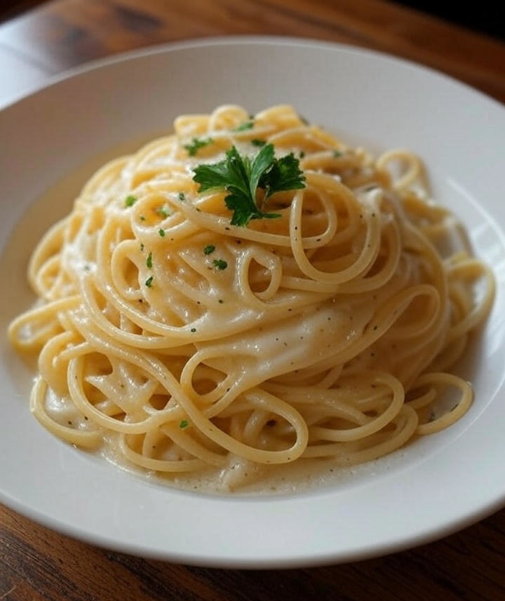

Home
Creamy Parmesan Pasta

Creamy Parmesan Pasta
This simple creamy, cheesy white sauce is a versatile base for many pasta dishes. It's perfect for a quick weeknight meal when time is a priority and the day has long run. The classic flavors of heavy cream and parmesan make this a delicious and fulfilling comfort food.
Ingredients:
- 1 tbsp olive oil
- 2 tbsp butter
- 3 cloves of garlic, minced
- 2 cups of heavy cream
- 1 cup of grated Parmesan cheese
- Salt and black pepper to taste
- 1/3 cup reserved pasta water (optional)
Instructions:
- Melt the butter and add the olive oil to the pan or skillet over medium heat.
- Add the minced garlic and cook for 2-3 minutes, until fragrant and not brown or burnt.
- Slowly pour the heavy cream into the pan while whisking constantly to help emulsify the sauce.
- Bring the mixture to a gentle simmer and cook for about 8 minutes, stirring occasionally, until the solution begins to thicken.
- Remove the pan from the heat and stir in the grated parmesan cheese a small amount at a time, ensuring each batch is melted and fully incorporated into the sauce before adding more.
- Season with salt and pepper to personal preference. If the sauce is too thick, use some of the reserved pasta water to dilute the sauce to your preference.
- Toss the cooked pasta in the sauce and serve immediately.
Additional Tips:
- Don't burn the garlic. When sautéing the garlic, keep the heat low and continuously stir. Burnt garlic will taste bitter and ruin the flavor of the sauce.
- Use a whisk. Whisking consistently and vigorously while adding the liquid ingredients prevents lumps and helps ensure a smooth sauce.
- Simmer, don't boil. When reducing a cream based sauce, bring to a gentle simmer rather than a rolling boil. High heat can separate the cream.
- Emulsify with pasta water. Before you drain your cooked pasta, save about a cup of the starchy water. Adding a little at a time to your sauce helps it bind the fat and liquid, creating a smooth sauce.